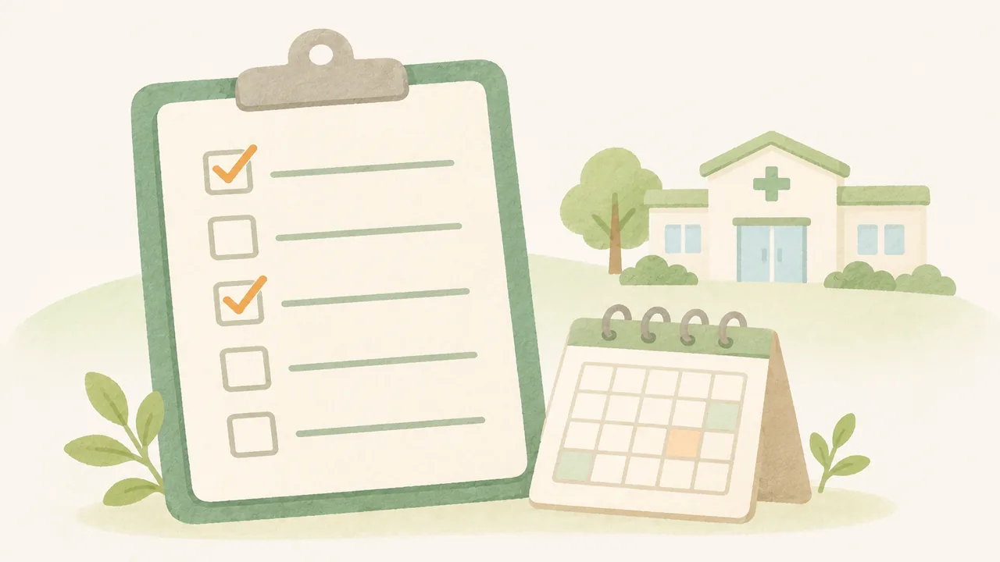

このブラウザでは、チェックを保存できません。バックアップの方法をご覧ください。
LINEの中で開いています。チェックを残すには、Safari・Chromeで開き直すのがおすすめです。
← 特典の一覧へ
受診の目安と、10の確認リスト
受診の目安
日常生活に支障が出るほどの状態が2週間前後続いたら、心療内科か精神科の受診を考えてください。
会社がしんどい時の、10の確認リスト
当てはまる数で何かを決めるものではありません。確認できていない項目から見てください。
チェックは自動で保存されます。
バックアップ
※診断や休職の判断を示すものではありません。病気かどうか、休むべきかどうかは、医師が判断します。
※厚生労働省などの公的資料をもとに作成しています(2026年10月時点)。制度は変わることがあります。